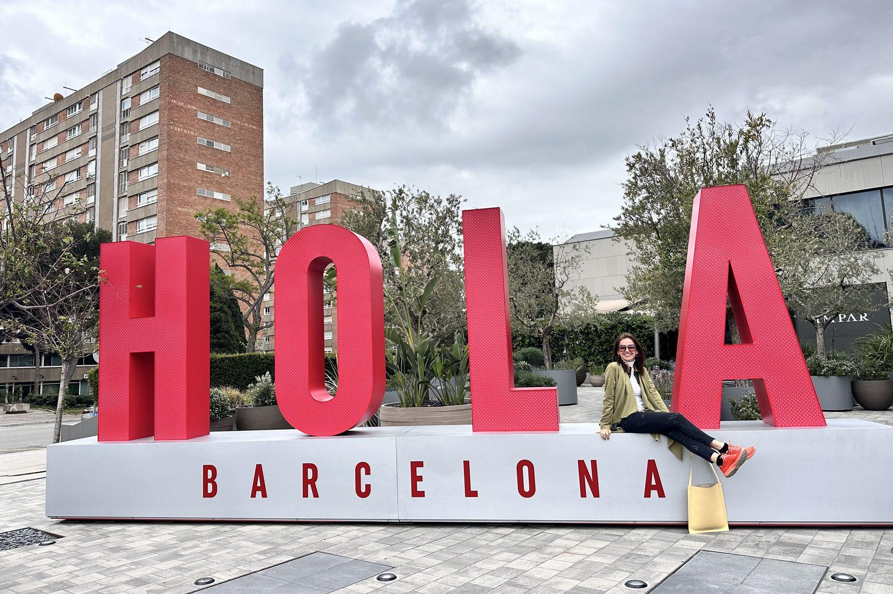
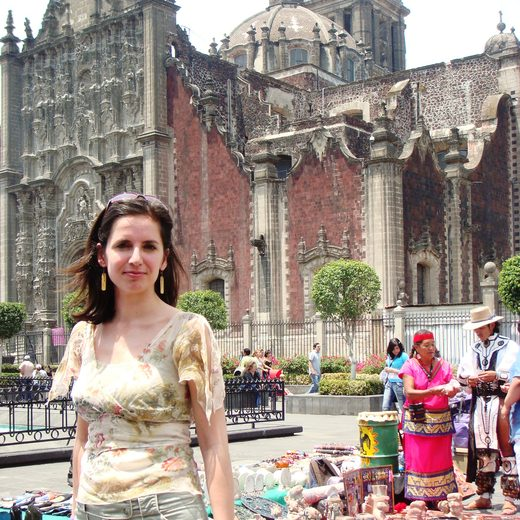
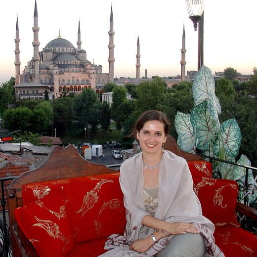
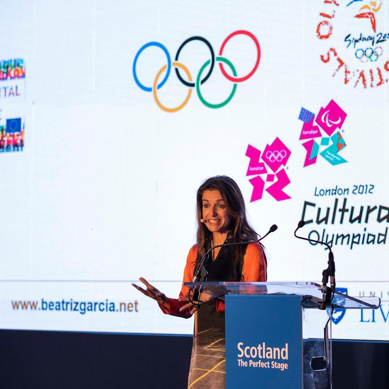
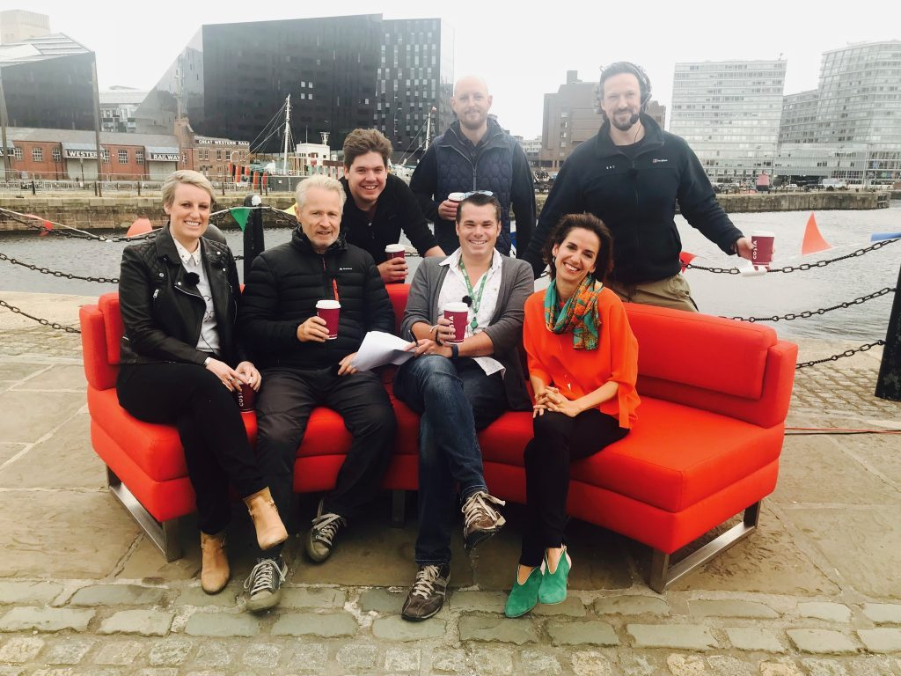
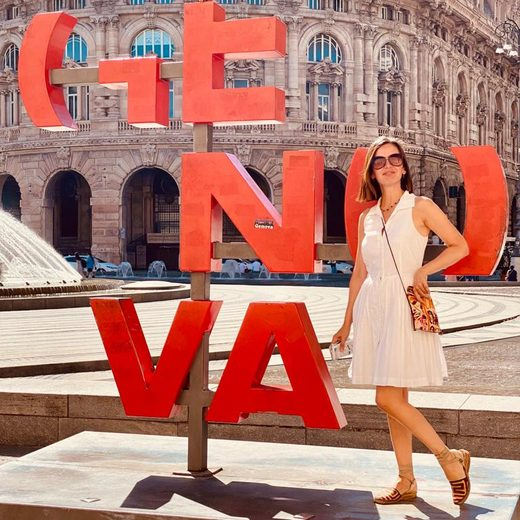
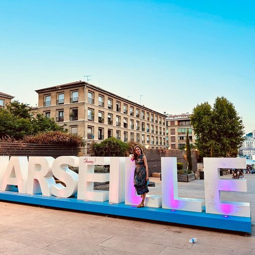
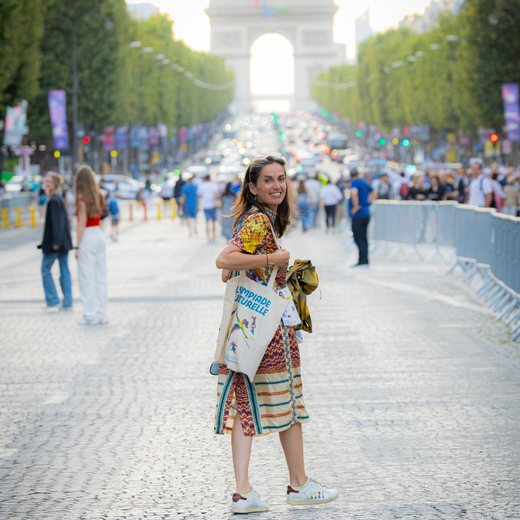
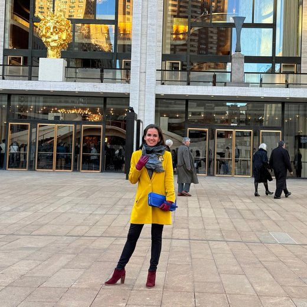

Glasgow
How a post-industrial city rebranded itself through culture, from "Glasgow's Miles Better" to "Scotland with Style", and what the 1990 title left behind ten years on.
My first case study was Glasgow, the city that showed Europe how culture could lead regeneration. Since then I have followed Liverpool, London, Barcelona and others through their big cultural moments, asking what changed: the city's image, its economy, its cultural life, and who benefited.

Long-run studies, followed over decades
How a post-industrial city rebranded itself through culture, from "Glasgow's Miles Better" to "Scotland with Style", and what the 1990 title left behind ten years on.
How the 2008 title changed the story of a post-industrial city: regeneration, civic pride and international image, and the tension between image-making and community. Also what World Heritage Site status meant for the city's future.
Creating an Impact · Heritage, Pride and Place · Liverpool in the archive
From advising the 2012 bid on culture to the first national evaluation of a Cultural Olympiad, then a scoping study for the culture and education district on Queen Elizabeth Olympic Park that became East Bank.
Where the four-year Cultural Olympiad began. I studied the Universal Forum of Cultures 2004 for the British Academy, and keep writing about the city's festivals, institutions and public space.
Cities in their big cultural moments, and in between.








UCLG Culture Summit · UNESCO Creative Cities Network · Eurocities · European Parliament · Royal Town Planning Institute · Creative Prague · Host City · University of Chicago Cultural Policy Center · University of Grenoble · Birkbeck, University of London · Association of European Schools of Planning
Selected platforms. More on speaking.
BBC Breakfast on Liverpool's legacy, ten years on (2018) · The Wall Street Journal on Liverpool as "the next Barcelona" (2008) · New Statesman (2008) · Deutsche Welle.
Euphoric Cities essays and posts from the archive, newest first
From the evidence base to the strategy, and the way you will show it worked. In English, Spanish, Catalan or French.
From Sydney 2000 to Milano Cortina 2026: how the Games use culture, and what it leaves behind.
Open the theme → European Capitals of CultureForty years of the programme, from Glasgow 1990 and Liverpool 2008 to Nikšić 2030.
Open the theme → Festivals and major eventsCommonwealth Games, Cities of Culture, festivals and their legacies.
Open the theme → Evaluation and cultural valueFrameworks for measuring what culture does, from Impacts 08 to the Culturometer.
Open the theme →